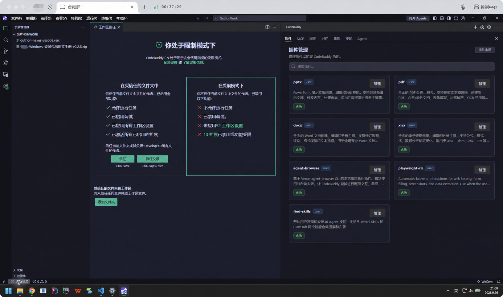
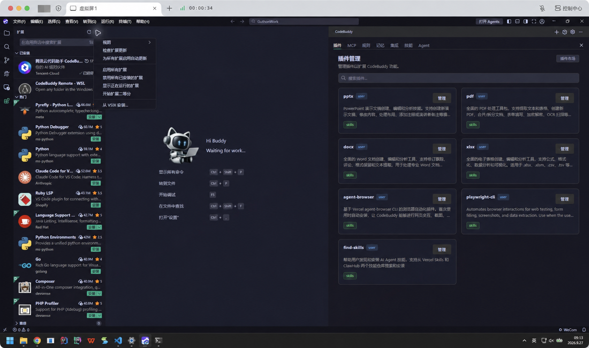
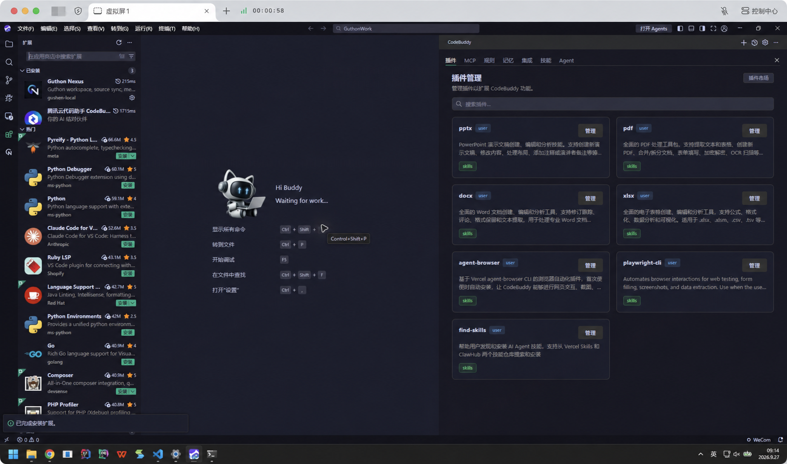
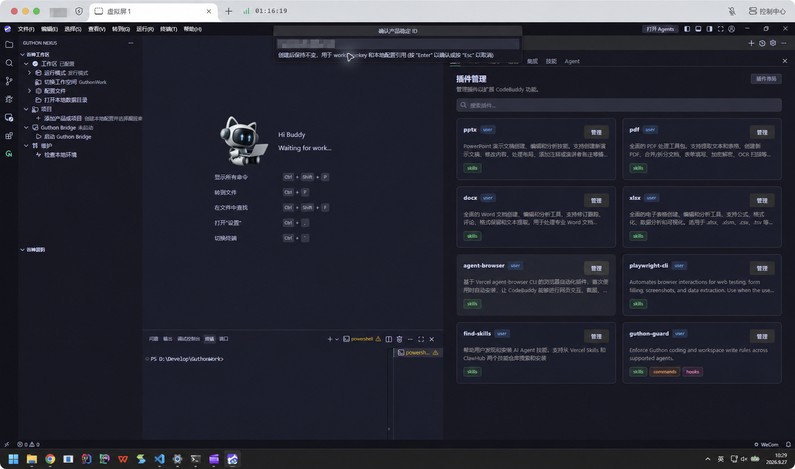

一、创建并信任工作区目录
1
在 CodeBuddy 安装完成后创建目录
- 在文件资源管理器创建一个根目录，例如
D:\Develop\GuthonWork。 - 在 CodeBuddy 选择「文件 → 打开文件夹」，打开该目录，并在提示时信任工作区。
- 把发行版运行文件放在根目录，工具数据保存在根目录下的
var。例如D:\Develop\GuthonWork\GuthonCodeTool-windows-x64.exe和D:\Develop\GuthonWork\var。

二、安装并配置 Guthon Nexus
2
下载同一版本的应用和 VSIX
- 从 GitHub 最新发行版下载 Windows x64 应用和
guthon-nexus-vscode.vsix，放到根目录。 - 在 CodeBuddy 的扩展视图中选择「… → 从 VSIX 安装…」，选中下载的 VSIX；安装后重载窗口。
- 打开左侧 Guthon Nexus，选择本地数据目录和发行版 EXE。输出面板显示
setup完成后，确认 Nexus 树中的工作区状态为「已配置」。


三、注册产品或项目
3
确认身份与数据来源
- 在 Nexus 中添加产品或项目，填写名称。ID 会自动生成，建议改成易读且稳定的 ID；工作区键分别采用
products.<id>或projects.<id>。 - 按实际来源选择 DATABASE 或 SVN，填写获授权的连接和 checkout 范围。同步前核对目标工作区身份。
- 使用 SVN 时输入 SVN 用户名、密码；Nexus 只保存用户名，密码由 SVN 保存。不要在配置文件或手册中记录密码。

四、启用团队治理
4
安装插件并初始化工作区
- 按团队提供的插件源，在 CodeBuddy 插件市场安装
guthon-guard，重载后确认插件仍可见。 - 在业务工作区打开
var，先运行guthon-init status核对目标、计划和冲突。非 Git 目录可以按计划执行init --no-git-hook。 - 建议将
var初始化为本地 Git 仓库，再检查并安装 Git Hook。初始化前先配置忽略规则，避免把源码、索引和运行数据纳入 Git。
五、日常使用
选择工作区在 Nexus 树确认当前产品或项目的工作区键与数据来源。
同步与开发按工作区执行同步；DATABASE 开发进入 Workcopy，SVN 修改使用受控入口。
更新工具使用同一发行版中的 EXE 和 VSIX，重载 CodeBuddy 后复查运行模式与本地数据目录。
六、安装验收
- CodeBuddy 已信任目标根目录。
- EXE 与 VSIX 来自同一发行版，Nexus setup 完成。
- 工作区身份和数据来源核对无误。
- 需要团队治理时，插件安装、工作区初始化和检查结果分别核验。
请根据当前设备的实际结果逐项确认；安装、索引和运行验证应分别取证。
七、安装与使用中的卡点
Nexus 无法加载源码
先检查当前运行入口、数据目录和工作区身份，再查看「输出 → GuthonCodeTool」中的完整错误。索引扫描计数不能代替最终完成状态。
Git Hook 显示 skipped
非 Git 初始化时跳过 Git Hook 属于预期。将 var 初始化为本地 Git 仓库后，再运行状态检查与初始化。
SVN 认证失败
核对 SVN 地址和用户名，按提示重新输入密码；不要把密码写入项目配置或截图。
其他问题可查阅 问题解决中心。